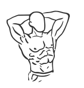
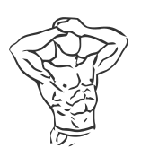
颈部前后活动Static Neck Flexion and Extension
- 坐直,肩膀放松往下沉,不要耸着。
- 下巴慢慢往胸口收,后颈感觉被拉开,停一下。
- 再慢慢抬头看向斜上方,不要一路仰到底。
- 整个过程慢,来回几次,以不头晕为准。
要领幅度小一点没关系,速度慢才是重点;脖子发出响声不要刻意去追。
什么情况别做有颈椎病、手臂发麻、头晕史的先问医生,别自己练。
图:everkinetic/data
issue #7 的 T1/T2 产物:45 个动作,每条都有中文步骤、要领和禁忌。 这一页只用来评审,不是 app 里的界面,app 里不会有它的入口。


要领幅度小一点没关系,速度慢才是重点;脖子发出响声不要刻意去追。
什么情况别做有颈椎病、手臂发麻、头晕史的先问医生,别自己练。
图:everkinetic/data
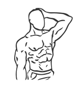
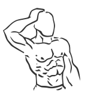
要领拉的是肩到耳朵那条线,不是脖子后面;沉肩比压头有用得多。
什么情况别做手上不要发力下压;出现放射性的麻或刺痛立刻停。
图:everkinetic/data
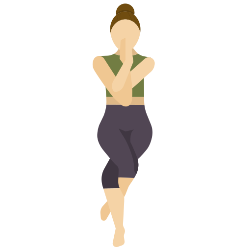
要领肩膀不要缩到耳朵边上;下半身可以不做缠腿那部分,上半身就够了。
什么情况别做肩关节做过手术或习惯性脱位的不要做。
图:alexcumplido/yoga-api
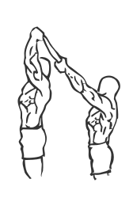
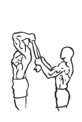
要领肋骨不要往前顶,腰不要跟着塌下去。
什么情况别做肩膀抬到一半就疼的,不要靠毛巾硬拽过去。
图:everkinetic/data
要领动的是整条脊柱,不是只有腰;跟着呼吸走就不会太快。
什么情况别做手腕疼的可以改成握拳撑地;膝盖不适的垫厚一点。
图:alexcumplido/yoga-api
要领腰塌下去到舒服就停,不比谁塌得深。
什么情况别做腰椎有滑脱、椎间盘问题的把幅度收小,或者只做猫式那一半。
图:alexcumplido/yoga-api
要领这是个休息姿势,不用使劲;坐不到脚跟上就在屁股下面垫个抱枕。
什么情况别做孕期、膝盖弯到底就疼的不要做。
图:alexcumplido/yoga-api
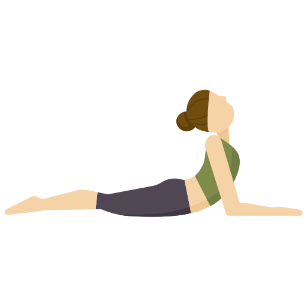
要领久坐一天之后这个比大幅度后弯安全得多。
什么情况别做腰一后仰就疼、或者有腰椎间盘突出的不要做。
图:alexcumplido/yoga-api
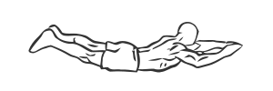
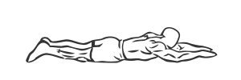
要领抬起来的高度不重要,后背有在用力才重要。
什么情况别做腰部有急性疼痛时不要做。
图:everkinetic/data
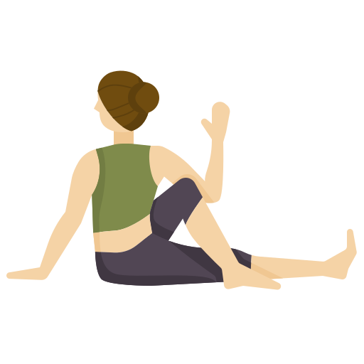
要领先长高再转,不要塌着腰硬拧。
什么情况别做孕期、腰椎术后不要做深度扭转。
图:alexcumplido/yoga-api
要领不要往前弯也不要往后仰,就在一个平面里侧倒。
什么情况别做站不稳的扶着桌子做。
图:alexcumplido/yoga-api
要领久坐一天最该拉的就是这里;前膝不要超过脚尖太多。
什么情况别做膝盖跪地就疼的垫厚一点或者不做。
图:alexcumplido/yoga-api
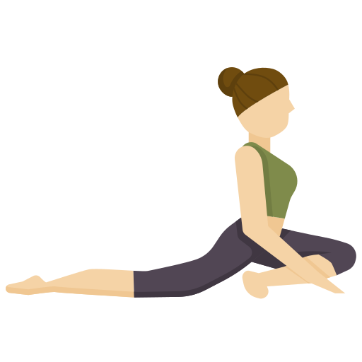
要领跑步之后臀部发紧,拉这里比拉大腿有用。
什么情况别做膝盖内侧有不适立刻退出来,改做躺姿的「四字」拉伸。
图:alexcumplido/yoga-api
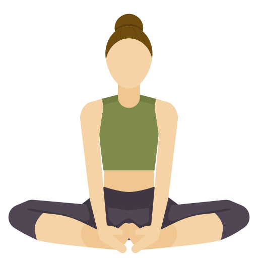
要领膝盖离地高一点完全没关系,别去比谁贴得下去。
什么情况别做髋关节置换过的、腹股沟拉伤没好的不要做。
图:alexcumplido/yoga-api
要领膝盖可以微微弯,弯着膝盖拉到的才是大腿后侧。
什么情况别做下背一弯就疼的改成躺着用毛巾勾脚拉。
图:alexcumplido/yoga-api
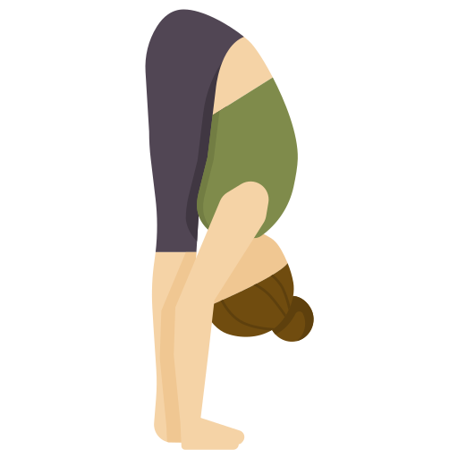
要领起身太快会头晕,这一条比拉伸本身更要紧。
什么情况别做血压偏高、有青光眼、容易体位性头晕的不要做低头位。
图:alexcumplido/yoga-api
要领髋摆正比折得深重要,歪着折是白拉。
什么情况别做腘绳肌拉伤急性期不要做。
图:alexcumplido/yoga-api
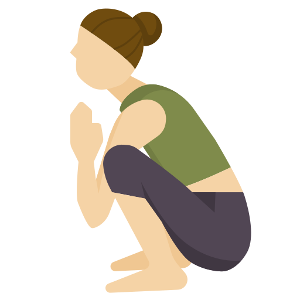
要领脚跟落不了地就在下面垫一本书或者一条卷起来的毛巾。
什么情况别做膝盖有明显不适、半月板受过伤的不要蹲到底。
图:alexcumplido/yoga-api
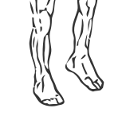
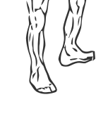
要领久坐之后脚发胀,先动这里最省事。
什么情况别做脚踝刚崴过、还肿着的不要主动绕。
图:everkinetic/data
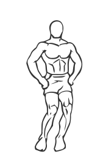
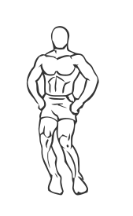
要领这是热身不是拉伸,别用力往下压膝盖。
什么情况别做膝关节疼痛发作期不要做。
图:everkinetic/data
要领跑前用这个把髋打开,比原地压腿有用。
什么情况别做站不稳时先扶着墙做。
图:alexcumplido/yoga-api
要领后脚踩实是关键,踩不实就把步子收短一点。
什么情况别做膝盖不适时把前膝弯的幅度收小。
图:alexcumplido/yoga-api
要领前膝要和脚尖同一个方向,不要往内塌。
什么情况别做髋或膝有旧伤时把两脚间距收小。
图:alexcumplido/yoga-api
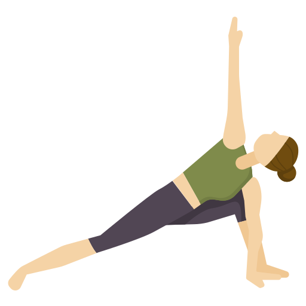
要领不要把重量全压在前腿上,后脚要有存在感。
什么情况别做颈部不适时不要抬头看上面那只手。
图:alexcumplido/yoga-api
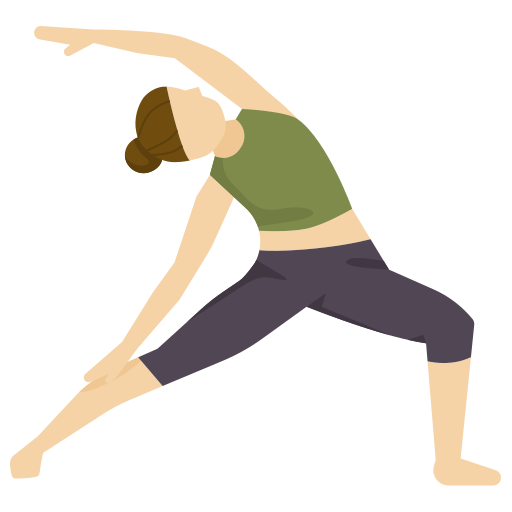
要领拉的是侧面,不是后腰;腰有感觉就说明弯错方向了。
什么情况别做腰椎不适的把幅度收到很小。
图:alexcumplido/yoga-api
要领手放多低不重要,身体在一个平面里才重要。
什么情况别做腘绳肌拉伤、腰痛发作时不要做。
图:alexcumplido/yoga-api
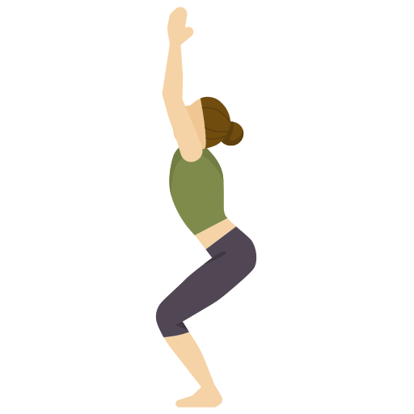
要领腿在抖是正常的,腰开始代偿就该停。
什么情况别做膝盖疼痛时把下蹲幅度收到很小。
图:alexcumplido/yoga-api
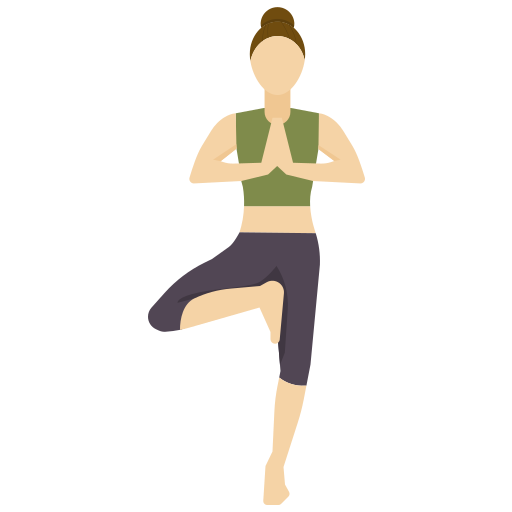
要领站不稳就脚尖点地做,或者扶着墙——这不算失败。
什么情况别做有跌倒史、头晕的一定扶着东西做。
图:alexcumplido/yoga-api
要领背拉直比脚跟落地重要,弯着膝盖完全可以。
什么情况别做手腕、肩膀有伤,或者血压问题不宜低头位的不要做。
图:alexcumplido/yoga-api
要领久坐圆肩之后打开胸口用这个,但幅度要循序。
什么情况别做腰后仰就疼、孕期、腕伤的换成斯芬克斯式。
图:alexcumplido/yoga-api
要领肩前侧的拉伸感来自手臂往上落,不是来自弯得更低。
什么情况别做肩关节不稳、血压问题不宜低头位的不要做。
图:alexcumplido/yoga-api
要领抬多高不重要,臀部有在发力才重要。
什么情况别做颈部不适时不要在抬起状态转头。
图:alexcumplido/yoga-api
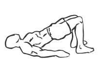
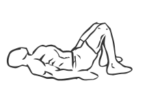
要领腰先酸说明是腰在干活,把幅度收小、更用力夹臀。
什么情况别做腰部急性疼痛时不要做。
图:everkinetic/data
要领睡前那一下不需要做动作,需要的是这个。
什么情况别做腰下面不舒服的在膝盖下垫个枕头。
图:alexcumplido/yoga-api
要领姿势垮掉之后多撑的每一秒都是在练错的东西。
什么情况别做腰痛发作、孕中晚期换成靠墙或跪姿版本。
图:alexcumplido/yoga-api
要领撑不住就把下面的膝盖落地当支点,不是降低难度是换个版本。
什么情况别做肩膀有伤时不要做。
图:alexcumplido/yoga-api
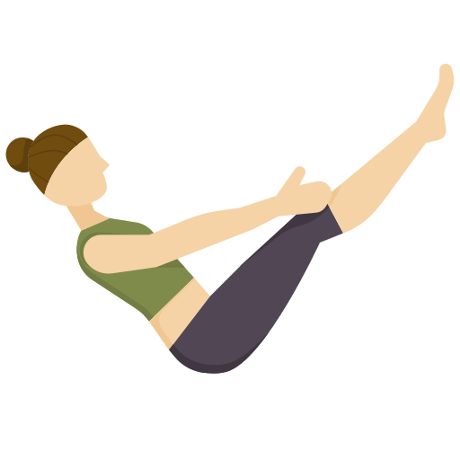
要领背一驼就没有在练腹部了,宁可脚放低一点。
什么情况别做尾骨、下背不适时不要做。
图:alexcumplido/yoga-api
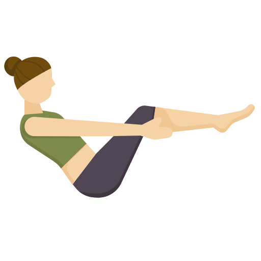
要领这是船式的进阶,先把船式做稳再来。
什么情况别做腰部有伤不要做。
图:alexcumplido/yoga-api
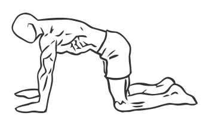
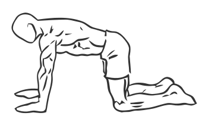
要领这是最不起眼但对腰最有用的一个,幅度小到别人看不出来。
什么情况别做几乎没有禁忌;疝气术后先问医生。
图:everkinetic/data
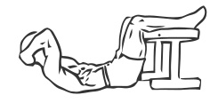
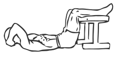
要领脖子酸说明是脖子在发力,把下巴和胸口之间留一个拳头的距离。
什么情况别做颈椎不适的换成腹部收紧那一条。
图:everkinetic/data
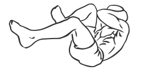
要领慢比快有用;腿伸得低不低取决于腰能不能贴住地面。
什么情况别做腰部不适时把腿抬高一点、幅度收小。
图:everkinetic/data
要领幅度非常小是对的,靠甩起来的那一下不算。
什么情况别做下背不适时不要做。
图:everkinetic/data
要领抬到腰开始代偿就已经过了,收小一点。
什么情况别做腰部急性疼痛时不要做。
图:everkinetic/data
要领做不了标准的就撑在桌沿或墙上,那是同一个动作不是缩水版。
什么情况别做手腕、肩、肘有伤时不要做。
图:everkinetic/data
要领比普通俯卧撑难,先把普通版本做稳。
什么情况别做肘关节有伤时不要做。
图:everkinetic/data
下面这 22 个动作文字已经写好了，缺的只是图——而没有图的动作不进库， 所以它们现在一条都不在 app 里。共需 35 张。补齐之后，颈肩、平衡两类不再单薄， 手腕前臂、坐姿椅子操、有氧心肺三类从零到有。
做好之后丢进 tools/gen_svg/，在 moves.py 里
补上这条动作的步骤/要领/禁忌，再跑一次 build.py 就进库了。
| 动作 | 场景 | 画什么 | 视角 | 张数 | 文件名 |
|---|---|---|---|---|---|
靠墙天使wall-angels | 颈肩 | 背贴墙站立，双臂贴墙从 W 形向上滑到 Y 形，肘和手背始终贴墙 | 正面 | 2 | gen-wall-angels-agen-wall-angels-b |
门框胸部拉伸doorway-chest | 颈肩 | 前臂贴在门框上，肘略低于肩，身体向前迈半步把胸口打开 | 四分之三 | 1 | gen-doorway-chest-a |
肩胛后缩scapular-squeeze | 颈肩 | 坐姿，双肘弯曲向后拉，两侧肩胛骨向中间夹紧，胸口打开 | 四分之三偏后 | 2 | gen-scapular-squeeze-agen-scapular-squeeze-b |
颈部左右转neck-rotation | 颈肩 | 坐姿，肩不动，头缓慢向一侧转到看肩膀的方向 | 正面 | 2 | gen-neck-rotation-agen-neck-rotation-b |
腕屈肌拉伸wrist-flexor | 办公室 | 一臂前伸肘伸直，掌心朝外指尖朝下，另一只手轻轻把手指往身体方向带 | 侧面 | 1 | gen-wrist-flexor-a |
腕伸肌拉伸wrist-extensor | 办公室 | 一臂前伸肘伸直，手背朝上手指朝下，另一只手轻轻下压手背 | 侧面 | 1 | gen-wrist-extensor-a |
手指张合finger-fan | 办公室 | 手部特写：从松松的握拳到五指完全张开 | 手部特写 | 2 | gen-finger-fan-agen-finger-fan-b |
扶椅起立sit-to-stand | 力量 | 从椅子上坐着到站直，手轻扶椅子扶手，背保持直 | 侧面 | 2 | gen-sit-to-stand-agen-sit-to-stand-b |
坐姿抬腿伸膝seated-leg-extension | 力量 | 坐在椅子上，一条腿从屈膝伸直到与地面平行 | 侧面 | 2 | gen-seated-leg-extension-agen-seated-leg-extension-b |
坐姿踏步seated-marching | 有氧 | 坐在椅子上，交替把膝盖抬离座面，像原地走路 | 正面 | 2 | gen-seated-marching-agen-seated-marching-b |
扶椅提踵chair-calf-raise | 力量 | 手扶椅背站立，脚跟抬起用前脚掌支撑再落下 | 侧面 | 2 | gen-chair-calf-raise-agen-chair-calf-raise-b |
坐姿扶椅转体seated-twist-chair | 办公室 | 坐在椅子上，一手扶椅背一手扶膝，上半身向后转 | 四分之三 | 1 | gen-seated-twist-chair-a |
扶椅单腿站single-leg-stand | 平衡 | 手轻扶椅背站立，一只脚离地，另一条腿站稳 | 正面 | 1 | gen-single-leg-stand-a |
脚跟对脚尖走tandem-walk | 平衡 | 沿一条直线走，后脚的脚尖顶着前脚的脚跟 | 正面 | 2 | gen-tandem-walk-agen-tandem-walk-b |
扶椅侧向踏步side-step | 平衡 | 手扶椅背，双脚交替向一侧跨步再并拢 | 正面 | 2 | gen-side-step-agen-side-step-b |
左右重心转移weight-shift | 平衡 | 双脚与髋同宽站立，把身体重心缓慢从一只脚移到另一只脚 | 正面 | 2 | gen-weight-shift-agen-weight-shift-b |
原地踏步marching-in-place | 有氧 | 站立原地交替抬膝，手臂自然摆动 | 正面 | 2 | gen-marching-in-place-agen-marching-in-place-b |
原地侧点步side-tap | 有氧 | 站立，一只脚向侧点地再收回，双手随之抬起——开合跳的低冲击版本 | 正面 | 2 | gen-side-tap-agen-side-tap-b |
快走brisk-walk | 有氧 | 正常快走的一个瞬间，手臂前后摆动，步幅比散步大 | 侧面 | 1 | gen-brisk-walk-a |
背后交扣扩胸behind-back-clasp | 颈肩 | 站立，双手在身后十指交扣，手臂伸直向下向后，胸口打开 | 四分之三 | 1 | gen-behind-back-clasp-a |
跪姿伸展（小狗式）puppy-pose | 腰背 | 跪姿，手臂向前伸直贴地，胸口向下沉，髋保持在膝盖正上方 | 侧面 | 1 | gen-puppy-pose-a |
扶墙小腿伸展calf-wall | 跑后 | 面对墙双手扶墙，一脚后撤伸直脚跟踩地，前膝弯曲身体前压 | 侧面 | 1 | gen-calf-wall-a |